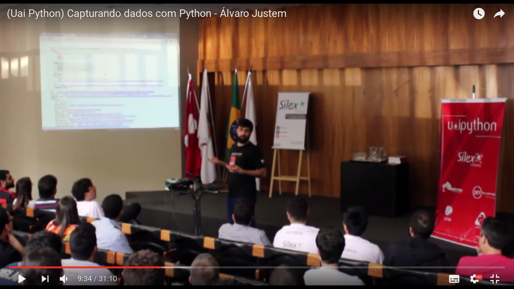
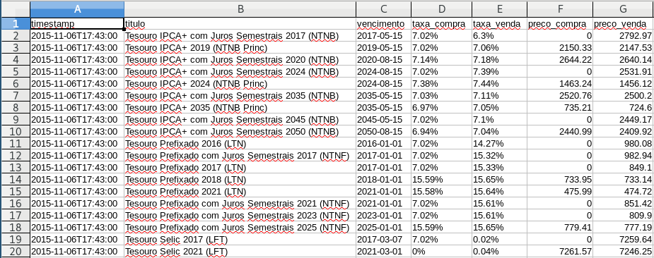
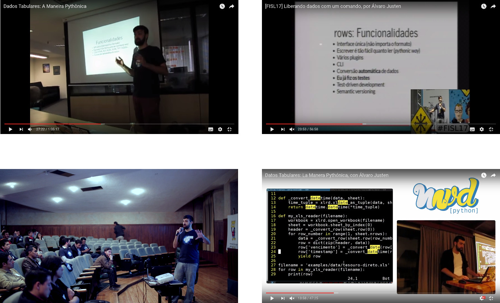
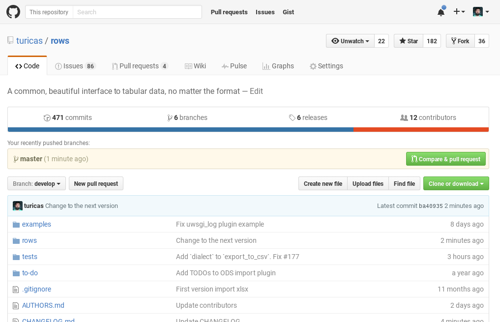

rows: do UaiPython à PythonSudeste
Turicas aka Álvaro Justen
PythonSudeste[0]
2 de setembro de 2016
Belo Horizonte/MG 
Turicas, prazer! =)
Sigam-me os bons!
{twitter,
github,
youtube,
slideshare,
instagram}
/turicas
alvaro@CursoDeArduino.com.br
turicas.info
29 de agosto de 2015
Belo Horizonte/MG
tesouro-direto.csv

CSV - sem rows
import csv
def convert_row(row):
# TODO: criar funções de conversão
row['preco_compra'] = _convert_float(row['preco_compra'])
row['preco_venda'] = _convert_float(row['preco_venda'])
row['taxa_compra'] = _convert_percent(row['taxa_compra'])
row['taxa_venda'] = _convert_percent(row['taxa_venda'])
row['vencimento'] = _convert_date(row['vencimento'])
row['timestamp'] = _convert_datetime(row['timestamp'])
filename = 'examples/data/tesouro-direto.csv'
reader = csv.DictReader(open(filename))
for row in reader:
print(convert_row(row))
XLS - sem rows
import xlrd
def _convert_row(row):
return [cell.value for cell in row]
def my_xls_reader(filename):
workbook = xlrd.open_workbook(filename)
sheet = workbook.sheet_by_index(0)
header = _convert_row(sheet.row(0))
for row_number in range(1, sheet.nrows):
data = _convert_row(sheet.row(row_number))
yield dict(zip(header, data))
filename = 'examples/data/tesouro-direto.xls'
for row in my_xls_reader(filename):
print(row)
HTML - sem rows
from lxml.html import document_fromstring
def _convert_row(row):
values = row.xpath('.//th/text()') + \
row.xpath('.//td/text()')
return [text.strip() for text in values]
def my_html_reader(filename):
with open(filename) as fobj:
tree = document_fromstring(fobj.read())
tables = tree.xpath('//table')
table = tables[0]
rows = table.xpath('.//tr')
header = _convert_row(rows[0])
for row in rows[1:]:
yield dict(zip(header, _convert_row(row)))
filename = 'examples/data/tesouro-direto.html'
for row in my_html_reader(filename):
print(row)
com rows
import rows
filename = 'examples/data/tesouro-direto.csv'
table1 = rows.import_from_csv(filename)
for row in table1:
print(row)
com rows [2]
import rows
filename = 'examples/data/tesouro-direto.xls'
table2 = rows.import_from_xls(filename)
for row in table2:
print(row)
com rows[3]
import rows
filename = 'examples/data/tesouro-direto.html'
table3 = rows.import_from_html(filename)
for row in table3:
print(row)
Resultado
Row(timestamp=datetime.datetime(2015, 11, 6, 17, 43),
titulo=u'Tesouro IPCA+ com Juros Semestrais 2017 (NTNB)',
vencimento=datetime.date(2017, 5, 15),
taxa_compra=Decimal('0.0702'),
taxa_venda=Decimal('0.063'),
preco_compra=0.0,
preco_venda=2792.97)
# namedtuple #FTW \o/

Command-line Interface
URL=http://www.sports-reference.com/olympics/countries/BRA/summer/2012/
rows convert $URL 2012-bra.csv
pip install rows # Python Package Index
apt-get install rows # Debian
dnf install rows # Fedora
github.com/turicas/rows

Versão 0.3.0 lançada hoje (especialmente pra vcs <3)
generonumero.media
Um Monte de Palestras!
Rio, Porto Alegre, Quito, Montevidéu...
Contribua (:
github.com/turicas/rows

Tutorial amanhã! o/
13:00-17:00
Curso de Arduino em BH!
cursodearduino.com.br/belo-horizonte
5 a 9 de setembro de 2016, Guaja Casa
Curso de Python
ONLINE E GRATUITO

pythonic.cafe

pythonbrasil.com.br
13 a 18 de outubro de 2016
Florianópolis/SC